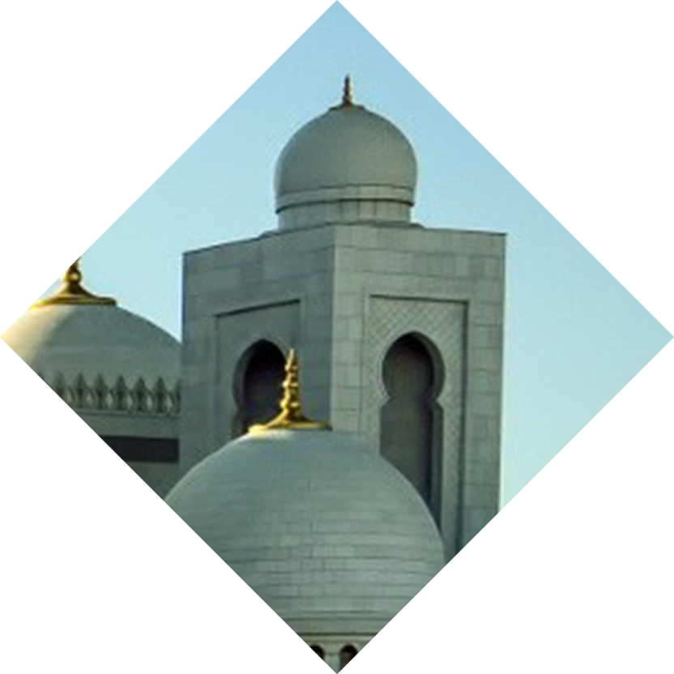
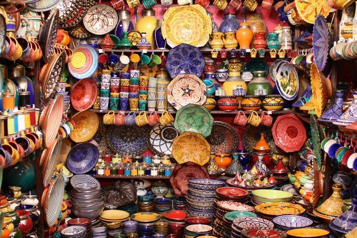
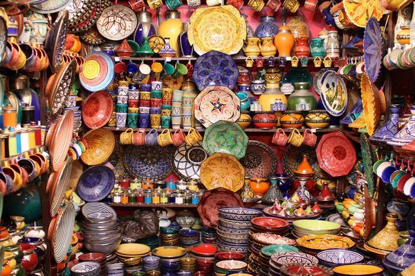

| Jour 16 | Poterie Meybod |
Iran |
Durant mon voyage, je me suis osé à parcourir le désert à maintes reprises. Mon parcours en Iran m’a donné une nouvelle occasion d’affronter l’air chaud et sec du désert mais aussi son silence nostalgique si apaisant, loin du bruit des grandes villes.
Dans l’étendu de la plaine aride du plateau iranien se faisait pourtant écho le bruit d’une ville : Meybod. J’y découvrais une ville ancienne. Rapidement, certains éléments attirèrent mon attention : les poteries et les faïences d’une étonnante authenticité.
Je remarquais un petit atelier ouvert sur la rue. Quelques poteries étaient alignées le long du mur. Un homme près d'une porte ouverte était assis à l’ombre, cherchant la fraîcheur. D’une main experte, il modelait l’argile. Remarquant mon intérêt pour son travail, il m’adressa un sourire fier et m’invita à m’assoir sur un petit tabouret de fortune. Tout en continuant de modeler la terre, il m’expliqua avec fierté son art. Il était maître potier, détenteur d’un savoir ancestral. Autrefois, les potiers formaient une hiérarchie distinguée dans la société de Meybod. Leur travail répondait aux besoin des habitants. Ils créent les objets et les récipients de la vie quotidienne.
Ces objets étaient souvent décorés de motifs, parfois mystérieux et riches d’expressions. Sur les poteries près de nous, je remarquais que le motif de l’oiseau revenait souvent. En effet, la nature est source d’inspiration dans l’art persan. C’est un motif revenant très régulièrement dans l’art iranien. Sa valeur symbolique remonte à l’air préislamique : il a une valeur de talisman. Il protègerait par exemple la maison.
Un autre motif ressortait parmi les décorations : le poisson. Il est un autre symbole important. C’est un porte bonheur, un symbole de vie et d’abondance.
Ces motif sont omniprésents dans la poterie meybodienne et représentent bien la culture de cette ville, une culture riche que j’ai pu découvrir le temps d’un journée.
Dans l’étendu de la plaine aride du plateau iranien se faisait pourtant écho le bruit d’une ville : Meybod. J’y découvrais une ville ancienne. Rapidement, certains éléments attirèrent mon attention : les poteries et les faïences d’une étonnante authenticité.
Je remarquais un petit atelier ouvert sur la rue. Quelques poteries étaient alignées le long du mur. Un homme près d'une porte ouverte était assis à l’ombre, cherchant la fraîcheur. D’une main experte, il modelait l’argile. Remarquant mon intérêt pour son travail, il m’adressa un sourire fier et m’invita à m’assoir sur un petit tabouret de fortune. Tout en continuant de modeler la terre, il m’expliqua avec fierté son art. Il était maître potier, détenteur d’un savoir ancestral. Autrefois, les potiers formaient une hiérarchie distinguée dans la société de Meybod. Leur travail répondait aux besoin des habitants. Ils créent les objets et les récipients de la vie quotidienne.
Ces objets étaient souvent décorés de motifs, parfois mystérieux et riches d’expressions. Sur les poteries près de nous, je remarquais que le motif de l’oiseau revenait souvent. En effet, la nature est source d’inspiration dans l’art persan. C’est un motif revenant très régulièrement dans l’art iranien. Sa valeur symbolique remonte à l’air préislamique : il a une valeur de talisman. Il protègerait par exemple la maison.
Un autre motif ressortait parmi les décorations : le poisson. Il est un autre symbole important. C’est un porte bonheur, un symbole de vie et d’abondance.
Ces motif sont omniprésents dans la poterie meybodienne et représentent bien la culture de cette ville, une culture riche que j’ai pu découvrir le temps d’un journée.
|  |

|
 |

 
